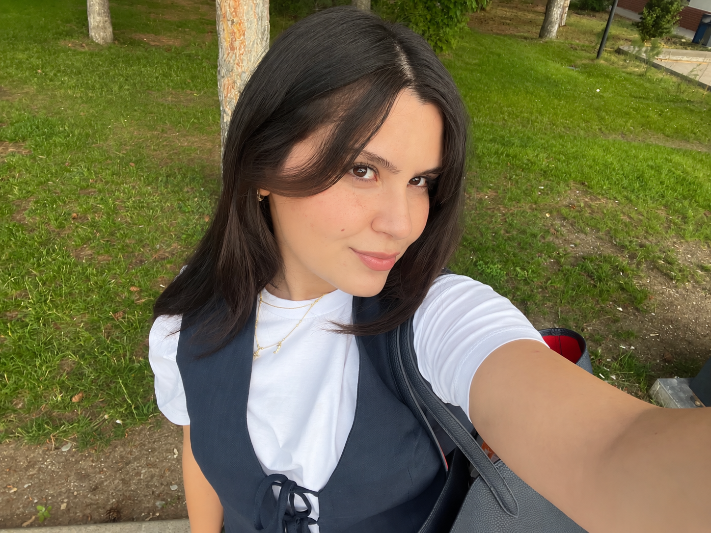

Yağmur Akgül
Geomatics Engineering Student
Hi, I'm Yağmur. I study Geomatics Engineering at Hacettepe University and Geographic Information Systems through Anadolu University’s Open Education program. I'm interested in GIS, remote sensing and turning spatial data into something people can explore.
Beyond my studies, I enjoy discovering places through poetry, art, films and food. This website brings those interests together with my travels and the destinations on my wishlist.
Education
Hacettepe University
Geomatics Engineering
Undergraduate studies · Expected graduation: 2027
2022 – Present
Anadolu University
Geographic Information Systems
Open Education · Expected graduation: 2027
2025 – Present
Merzifon Science High School
High School
Merzifon, Amasya
2017 – 2021
About This Website
I built this website for my Web GIS coursework to explore how maps can connect places with stories and personal interests.
The culture map brings together poets' birthplaces, artworks, Michelin-starred restaurants and locations connected to films and series. The travel map shows destinations I've visited and those on my wishlist.
Explore my maps ↗